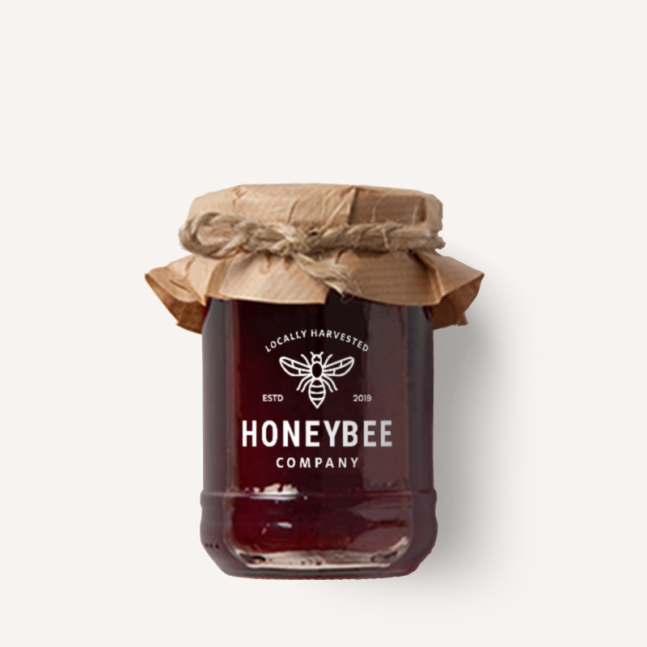

محصولات ما
فروشگاه آنلاین ما را برای پوشاک زیبا با تم زنبور عسل، کت و شلوارهای زنبور عسل منحصر به فرد، ابزارهای آموزشی، گواهی هدیه و موارد دیگر بررسی کنید.
عسل هدر
۱,۰۰۰,۰۰۰ ریال
عسل هدر از شهد گلهای هدر به دست میآید و طعمی خاص و رنگ تیره دارد. این عسل برای تقویت سیستم ایمنی بدن و خواص ضدعفونیکننده مفید است.
جدید
عسل جراح
۱,۵۰۰,۰۰۰ ریال
عسل جراح از درخت جراح در استرالیا تولید میشود. این عسل به دلیل خواص ضدباکتریایی و آنتیاکسیدانی قوی و طعم ملایم و رنگ کهربایی معروف است.

عسل لیندن
۲,۰۰۰,۰۰۰ ریال
عسل لیندن از شهد گلهای درخت لیندن تهیه میشود و طعمی ملایم با عطری خوشایند دارد. این عسل به خواص آرامبخش و تقویت سیستم ایمنی بدن معروف است.